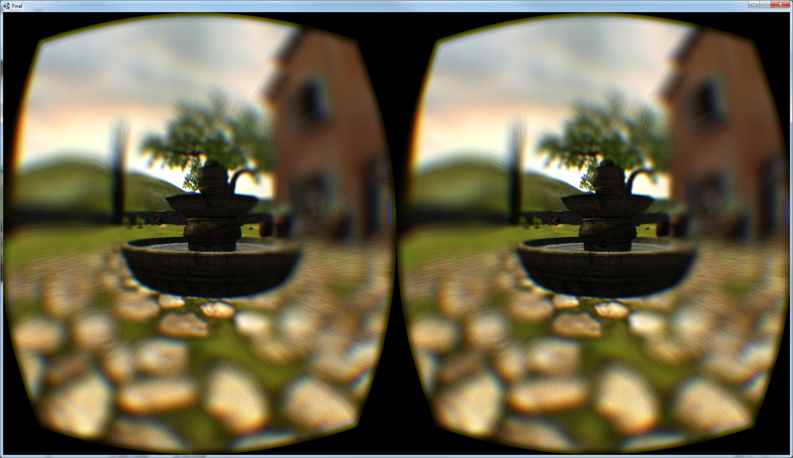
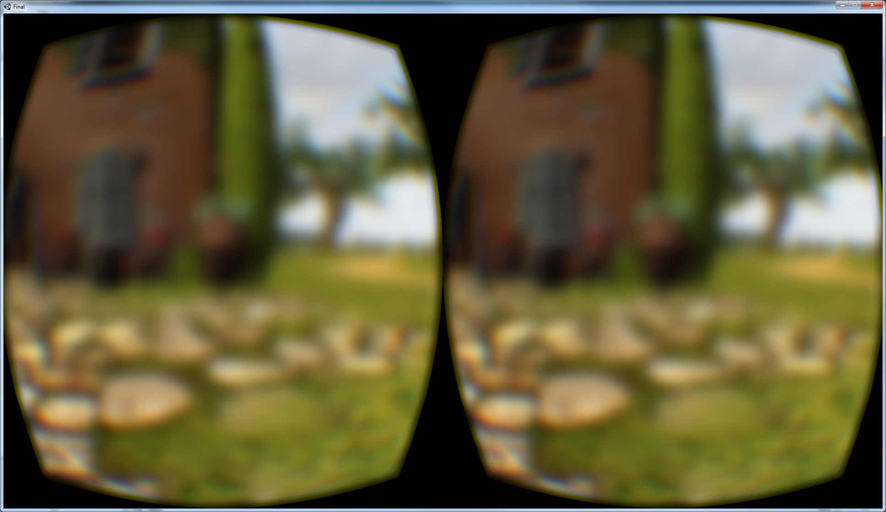
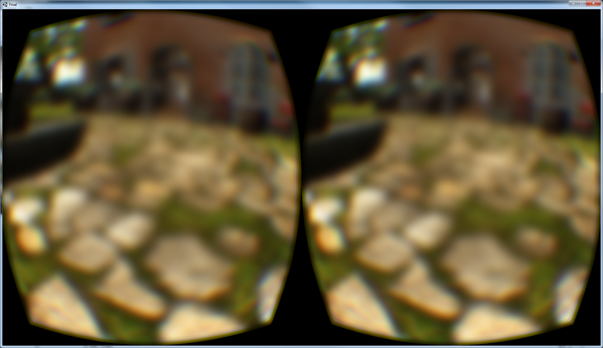
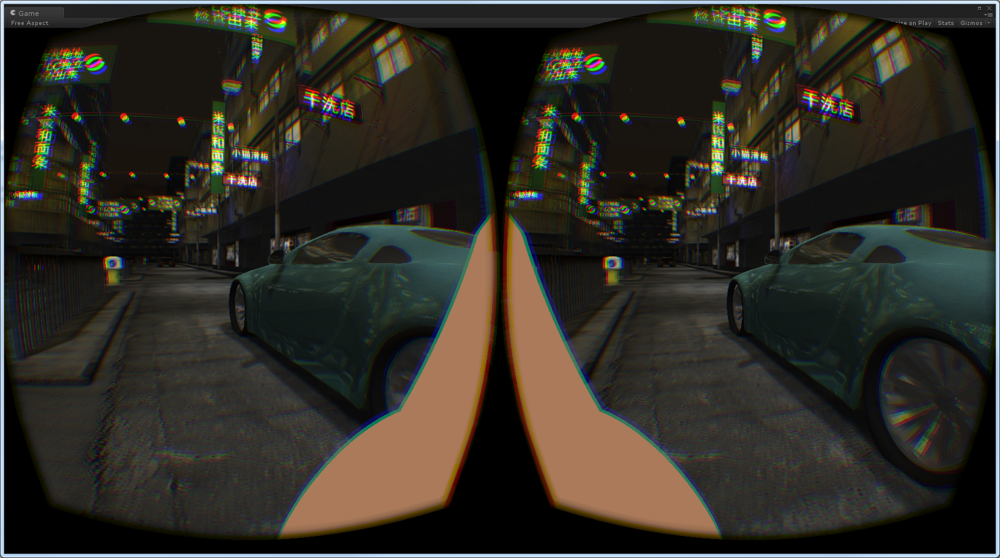
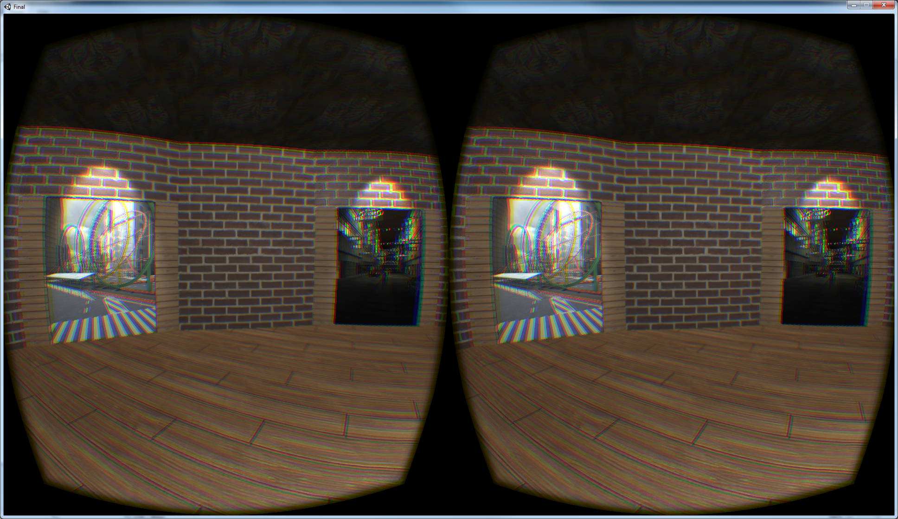
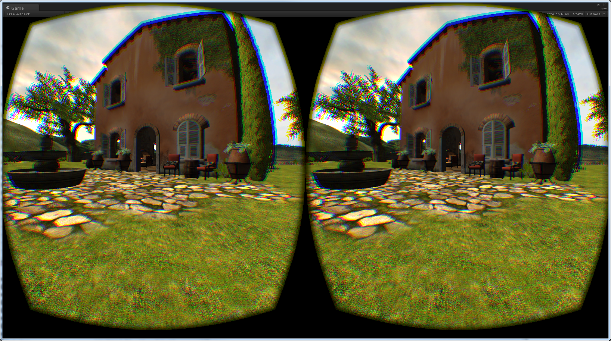
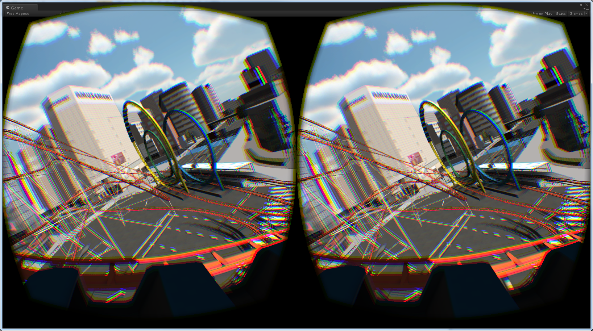
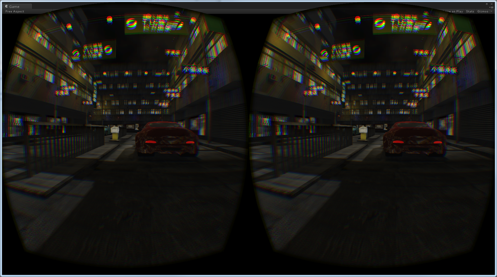

Project Description
It is not precisely known why people experience sickness in virtual reality. One of the main challenges of our project involved theorizing potential causes of simulator and motion sickness based on class material and outside research. As mentioned in class lectures, one source of sickness might arise from the mismatch between the visual and the vestibular systems. The eyes perceive motion while the vestibular organs do not. This leads us to our next challenge: suggesting plausible techniques and potential solutions to this problem. For our project, we limit ourselves to experimenting with techniques which involve first person character locomotion and optical flow.
Motion Blur
Our first technique involved starting with the simple user movements: walking around and running. We normally do not see everything in our vision as crystal clear as the Rift shows us. Our eyes only focus on a small area in the center of our vision, while our peripheral vision is unfocused, unclear. To simulate this, we implement a radial blur around the periphery. Forward (or backward) movement triggers our blur effect and the blur scales with velocity. In other words, the blur becomes stronger in intensity and smaller in radius as the user goes from inching forward, to walking, to sprinting.
Rotational Blur
Artifically rotating your vision, i.e. using the mouse or joystick on the controller to rotate the field of view as opposed to using your head, is highly uncomfortable. As recommended by the Best Practices Guide, acceleration should be instant, not gradual, and infrequent. Rotation, even while turning at constant velocity, causes acceleration, which in turn creates a mismatch among visual, vestibular, and proprioceptive senses. The Best Practices Guide advises that any acceleration should be initiated by the user. However, even rotating your field of view via user input, such as a mouse or joystick, is nauseating for many. We decided to extend our blurring technique to this problem as well, having the field of view blur only if the user tries to rotate artificially. We leave the usual head rotation mechanic unblurred.
Jump Blur
The idea came from our discomfort with current jump mechanics and the particularly jarring feeling of landing. It was hard to pinpoint exactly what was wrong with landing. Ultimately we felt that it was the abrupt stop of optical flow while our other senses simultaneously told us nothing had changed in our motion. We considered blacking out the screen or having smoke appear around the player. In the end, we decided against blacking out as we thought it might cause some disorientation or some flickering effect if the player jumped too often. We chose to go with blurring the user's vision upon landing on the ground. It is somewhat difficult to capture the effect in an image, but we provide one anyway. For a quick preview, we demonstrate this jump blur in the video as well. However, the full effect is only felt through having the Rift on.
Reverse Optical Flow

Our other techniques have revolved around the idea of reducing or blocking optical flow. Could there be a way to cancel optical flow? In office hours discussion with Professor LaValle, we toyed with the notion that perhaps instead of blurring, we could have part of the vision have a reverse optical flow effect. We implement this idea as another potential solution for artificially induced rotation. We have two bars, one displayed towards the top of the field of view and the other displayed towards the bottom. When the user artificially induces rotation, these two bars will reverse the optical flow. So if the user rotates to the right (left), optical flow is expected to flow to the left (right). The bars, however, will show optical flow to right (left).
Nose (Reduced Optical Flow)
This idea follows the blurring technique in attempting to reduce optical flow, or at least to simulate a closer truth of how much optical flow our eyes experience in actual reality. During the Spring 2015 semester, a study at Purdue University was released: Nasum Virtualis: A Simple Technique for Reducing Simulator Sickness. We decided to test this claim for ourselves by creating our own nose. After initial implementation, it became obvious that adding a nose wasn't as simple a technique as the title of the Purdue study suggests. Due to genetics, everyone carries their own uniquely sized, shaped, and colored nose on their face. It may obscure 30% of their vision or it may only occupy a minuscule corner. Some people may be able to see the bridge or their nose; others may only see the tip. People's skins may be darker or lighter. We tried several implementations of nose sizes, colors, and shapes. Ultimately, however, given time constraints, we could only test one size, color, and shape as shown in the screenshot and video.
Teleportation as Locomotion
We were interested in how feasible teleportation could be used as a means of player movement in virtual reality experiences. In a way, teleportation is almost like jumping. However, teleportation is instantaneous movement from one place to another. There is no optical flow perceived by the user and thus (it is our hope) perhaps no discomfort. In our implementation, the user simply points his head in the location he or she wishes to teleport to (up to a certain distance), maintaining the Best Practices Guide's recommendation that the user is provided a visual cue. In our case, we allow the user to point to where he or she intends to teleport.
Test Environments
We design several test environments to simulate various VR situations which could induce discomfort in individuals. The first is Tuscany, in which all of our techniques are implemented and testable. The user has full control of movement and exploration. The second is a Roller Coaster in a city. The user simply sits in a wagon and is allowed to rotate his or her head. This is the more extreme environment and easily induces discomfort and even nausea for most people. We wanted to have an extreme environment to fully test our techniques. The third environment is Hong Kong and an open world like Tuscany. It is mainly a testing environment for us as developers rather than a testing environment for users, but users are free to enter the environment.


